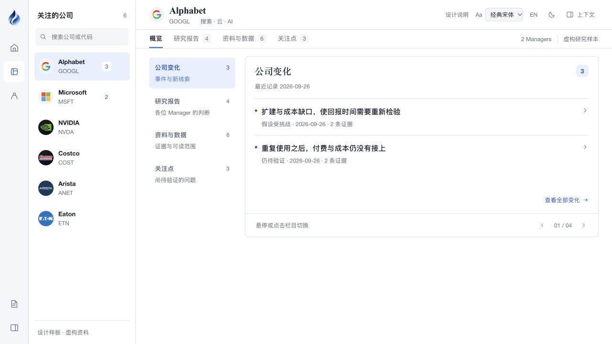
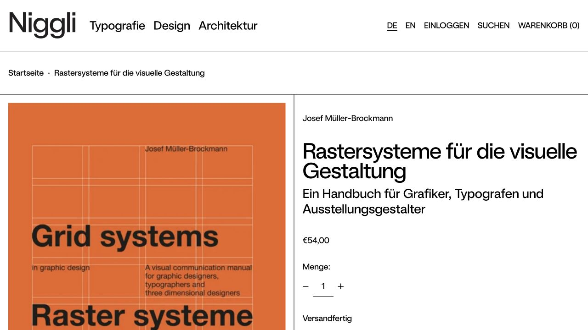

让内容比导航更醒目
公司页同时存在对象名单、顶部栏目、内层栏目和右侧模块标题。例如“研究报告”出现三次。这些层级各有用途，但现在视觉重量相近。
建议：保留已认可的左列表/右内容，让内层目录更安静；右侧直接强调本次变化、报告判断与对应日期。
2026-10-05 · 实际页面截图 · 本轮只作比较，工作台未修改
当前的差距，主要在主内容与导航的关系、留白的分配、文字的主次。主页已经有“收益 → 曲线 → 持仓”的阅读重心；公司页仍偏向展示栏目本身。

Alphabet 有两条变化预览，但导航、分类和标题的存在感接近正文。两条内容下面的大块空白属于容器留白。

书封、书名和说明有明显的主次；内容直接落在版面网格上。可借鉴这种层级，不照搬商品页的大标题与留白尺度。
公司页同时存在对象名单、顶部栏目、内层栏目和右侧模块标题。例如“研究报告”出现三次。这些层级各有用途，但现在视觉重量相近。
建议：保留已认可的左列表/右内容，让内层目录更安静；右侧直接强调本次变化、报告判断与对应日期。
NVIDIA 暂无报告，也仍使用完整的高容器与底部翻页区。Alphabet 只有两条预览，内容和“查看全部”之间同样隔了较大空间。
建议：正常内容与空状态分别处理；同一条信息紧凑成组，不同信息之间留足距离。继续整体压间距，不能解决这种差别。
当前页实测选中“经典宋体”。主标题、正文、日期与辅助说明的字号和灰度比较接近；这只是部分原因，同字体下主页已经更清楚。
建议：先明确结论、正文、元信息三档；导航与数字保持简洁，宋体/Times 可以继续用于阅读。字体选择暂不替用户统一。
先以 Alphabet 公司概览做一张“同样内容、重新分配层级”的对照稿：减少容器感，降低导航重量，把公司变化作为视觉主角。另做对应的无报告状态。主页保留；确认之后再把这套规则延伸到投资 Agent 页。